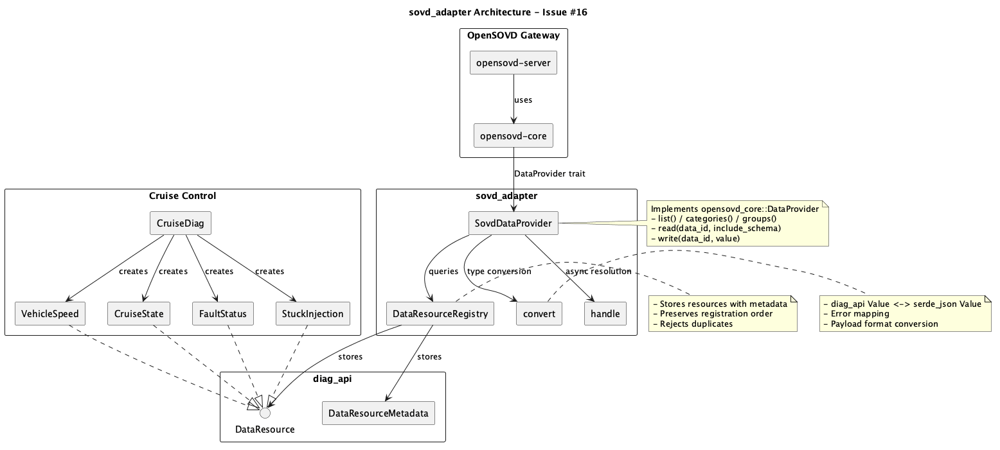

Executive Summary
QUALIFICATION: PASSED
SWE.1 - Requirements
Functional Requirements
| Category | Count | Status |
|---|
| Resource Registration (REQ-REG) | 4 | VERIFIED |
| DataProvider Implementation (REQ-PROV) | 7 | VERIFIED |
| Payload Format Support (REQ-FMT) | 4 | VERIFIED |
| Error Handling (REQ-ERR) | 2 | VERIFIED |
| Async Handle Resolution (REQ-ASYNC) | 3 | VERIFIED |
20/20 requirements verified (100%)
SWE.2 - Architecture
Component Diagram

Key Components
| Component | Purpose | Lines |
|---|
SovdDataProvider | Implements opensovd_core::DataProvider | 321 |
DataResourceRegistry | Resource storage and lookup | 203 |
convert | Type conversions between crates | 260 |
handle | Async handle resolution | 95 |
cruise | Cruise control example resources | 380 |
SWE.3 - Detailed Design
Key Design Decisions
| Decision | Rationale |
|---|
| Mutex for resources | DataResource::write() requires &mut self, DataProvider methods take &self |
| IndexMap for registry | Preserve registration order for predictable listings |
| JSON string roundtrip | Different serde_json versions in diag_api and opensovd_core |
| Lock released before await | Prevent deadlocks in async context |
Cruise Control Resources
| Resource | Category | Access |
|---|
| vehicle_speed | currentData | read |
| cruise_state | currentData | read |
| speed_sensor_fault_status | currentData | read |
| speed_sensor_stuck | storedData | read/write |
SWE.4 - Unit Tests
| Module | Tests | Status |
|---|
| registry.rs | 4 | PASS |
| convert.rs | 8 | PASS |
| handle.rs | 5 | PASS |
| provider.rs | 10 | PASS |
| cruise.rs | 5 | PASS |
32/32 tests passed (100%)
SWE.5 - Integration Tests
| Test | Description | Status |
|---|
| serves_diag_api_resources_not_demo_data |
Verify cruise component and resources are served |
PASS |
| injected_fault_is_debounced_then_reported |
Verify fault injection with debounce timing |
PASS |
| read_only_resource_rejects_writes |
Verify read-only enforcement |
PASS |
SWE.6 - Qualification
Acceptance Criteria (Issue #16)
| Criteria | Status |
|---|
| DataResource readable/writable over SOVD/REST via gateway |
DONE |
| UDS-backed resources served without extra code |
DONE |
| Categories/groups/tags reflect DataResourceMetadata |
DONE |
| Tests green in CI (Bazel score_diag_x86_64_linux) |
DONE |
Build Verification
| Check | Result |
|---|
| Bazel build | PASS |
| Rust 2021 edition | PASS |
| SPDX headers | PASS |
| Conventional commits | PASS |
Submission Reference
| Field | Value |
|---|
| Upstream Repository | eclipse-score/inc_diagnostics |
| Issue | #16 |
| Pull Request | #40 |
| Fork | EP1991/inc_diagnostics |
| Branch | feature/16-sovd-adapter-dataprovider |
| Base Branch | gateway_cda_int (PR #6) |